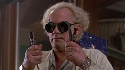

How it works:
We pick up your car
No need to leave the house, we'll pick up your car.

We convert it
We convert your car into a time machine.

We test it
We make a couple of test time travels to make sure everthing works
We deliver it
Sit tight, we'll bring your new time machine to you.